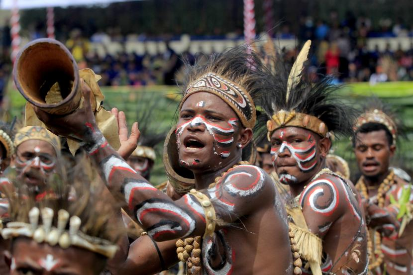

PAPUA
Papua adalah sebuah provinsi di Indonesia yang terletak di
pulau Nugini
bagian barat atau west New Guinea. Papua juga sering disebut sebagai Papua Barat karena Papua bisa
merujuk kepada seluruh pulau Nugini termasuk belahan timur negara tetangga, east New Guinea atau Papua
Nugini. Papua Barat adalah sebutan yang lebih disukai para nasionalis yang ingin memisahkan diri dari
Indonesia dan membentuk negara sendiri. Provinsi ini dulu dikenal dengan panggilan Irian Barat sejak
tahun 1969 hingga 1973, namanya kemudian diganti menjadi Irian Jaya oleh Soeharto pada saat meresmikan
tambang tembaga dan emas Freeport, nama yang tetap digunakan secara resmi hingga tahun 2002. Nama
provinsi ini diganti menjadi Papua sesuai UU No 21/2001 Otonomi Khusus Papua. Pada masa era kolonial
Belanda, daerah ini disebut Nugini Belanda (Dutch New Guinea).
Asal kata Irian adalah Ikut Republik Indonesia Anti-Netherland. Kata Papua sendiri berasal dari bahasa
melayu yang berarti rambut keriting, sebuah gambaran yang mengacu pada penampilan fisik suku-suku asli.
Pada tahun 2004, disertai oleh berbagai protes, Papua dibagi menjadi dua provinsi oleh pemerintah
Indonesia bagian timur tetap memakai nama Papua sedangkan bagian baratnya menjadi Irian Jaya Barat yang
sekarang menjadi Provinsi Papua Barat .